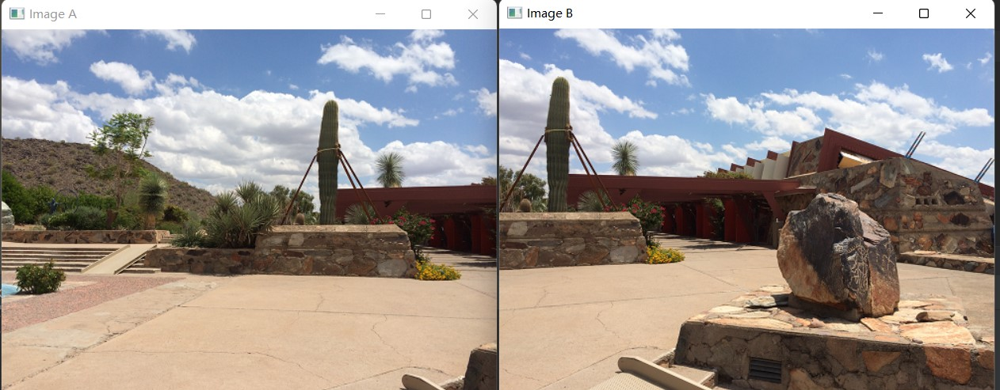
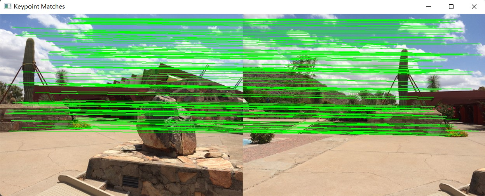
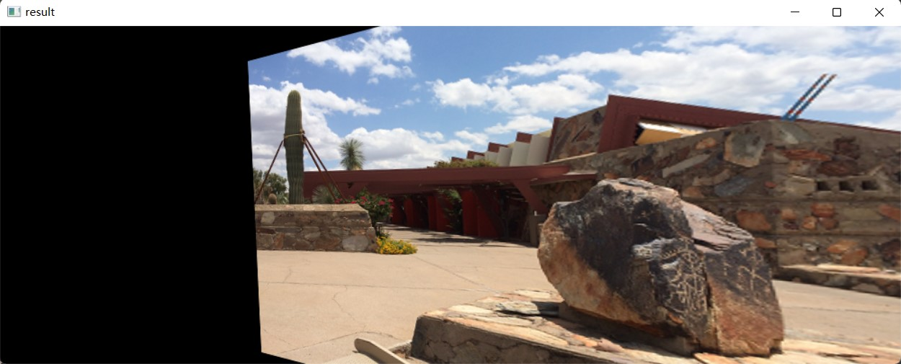
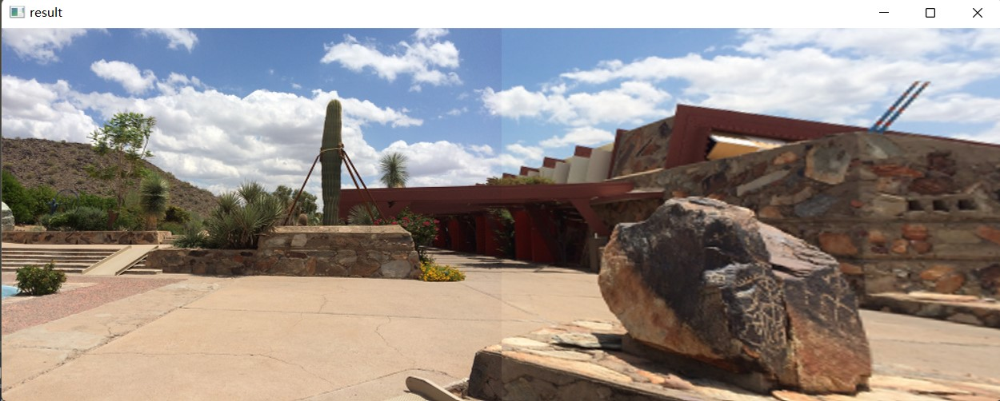

【基础】程序展示
imagestitch.py
from Stitcher import Stitcher
import cv2
#读取拼接图片
imageA = cv2.imread("left_01.png")
imageB = cv2.imread("right_01.png")
#把图片拼接成全景图
stitcher = Stitcher()
(result, vis) = stitcher.stitch([imageA, imageB], showMatches=True)
#显示所有图片
cv2.imshow("Image A", imageA)
cv2.imshow("Image B", imageB)
cv2.imshow("Keypoint Matches", vis)
cv2.imshow("Result", result)
cv2.waitKey(0)
cv2.destroyAllWindows()
Stitcher.py
import numpy as np
import cv2
class Stitcher:
# 拼接函数
def stitch(self, images, ratio=0.75, reprojThresh=4.0, showMatches=False):
# 获取输入图片
(imageB, imageA) = images
# 检测A、B图片的SIFT关键特征点，并计算特征描述子
(kpsA, featuresA) = self.detectAndDescribe(imageA)
(kpsB, featuresB) = self.detectAndDescribe(imageB)
# 匹配两张图片的所有特征点，返回匹配结果
M = self.matchKeypoints(kpsA, kpsB, featuresA, featuresB, ratio, reprojThresh)
# 如果返回结果为空，没有匹配成功的特征点，退出算法
if M is None:
return None
# 否则，提取匹配结果
# H是3x3视角变换矩阵
(matches, H, status) = M
# 将图片A进行视角变换，result是变换后图片
result = cv2.warpPerspective(imageA, H, (imageA.shape[1] + imageB.shape[1], imageA.shape[0]))
self.cv_show('result', result)
# 将图片B传入result图片最左端
result[0:imageB.shape[0], 0:imageB.shape[1]] = imageB
self.cv_show('result', result)
# 检测是否需要显示图片匹配
if showMatches:
# 生成匹配图片
vis = self.drawMatches(imageA, imageB, kpsA, kpsB, matches, status)
# 返回结果
return (result, vis)
# 返回匹配结果
return result
def cv_show(self, name, img):
cv2.imshow(name, img)
cv2.waitKey(0)
cv2.destroyAllWindows()
def detectAndDescribe(self, image):
# 将彩色图片转换成灰度图
gray = cv2.cvtColor(image, cv2.COLOR_BGR2GRAY)
# 建立SIFT生成器
descriptor = cv2.xfeatures2d.SIFT_create()
# 检测SIFT特征点，并计算描述子
(kps, features) = descriptor.detectAndCompute(image, None)
# 将结果转换成NumPy数组
kps = np.float32([kp.pt for kp in kps])
# 返回特征点集，及对应的描述特征
return (kps, features)
def matchKeypoints(self, kpsA, kpsB, featuresA, featuresB, ratio, reprojThresh):
# 建立暴力匹配器
matcher = cv2.BFMatcher()
# 使用KNN检测来自A、B图的SIFT特征匹配对，K=2
rawMatches = matcher.knnMatch(featuresA, featuresB, 2)
matches = []
for m in rawMatches:
# 当最近距离跟次近距离的比值小于ratio值时，保留此匹配对
if len(m) == 2 and m[0].distance < m[1].distance * ratio:
# 存储两个点在featuresA, featuresB中的索引值
matches.append((m[0].trainIdx, m[0].queryIdx))
# 当筛选后的匹配对大于4时，计算视角变换矩阵
if len(matches) > 4:
# 获取匹配对的点坐标
ptsA = np.float32([kpsA[i] for (_, i) in matches])
ptsB = np.float32([kpsB[i] for (i, _) in matches])
# 计算视角变换矩阵
(H, status) = cv2.findHomography(ptsA, ptsB, cv2.RANSAC, reprojThresh)
# 返回结果
return (matches, H, status)
# 如果匹配对小于4时，返回None
return None
def drawMatches(self, imageA, imageB, kpsA, kpsB, matches, status):
# 初始化可视化图片，将A、B图左右连接到一起
(hA, wA) = imageA.shape[:2]
(hB, wB) = imageB.shape[:2]
vis = np.zeros((max(hA, hB), wA + wB, 3), dtype="uint8")
vis[0:hA, 0:wA] = imageA
vis[0:hB, wA:] = imageB
# 联合遍历，画出匹配对
for ((trainIdx, queryIdx), s) in zip(matches, status):
# 当点对匹配成功时，画到可视化图上
if s == 1:
# 画出匹配对
ptA = (int(kpsA[queryIdx][0]), int(kpsA[queryIdx][1]))
ptB = (int(kpsB[trainIdx][0]) + wA, int(kpsB[trainIdx][1]))
cv2.line(vis, ptA, ptB, (0, 255, 0), 1)
# 返回可视化结果
return vis
结果展示
   